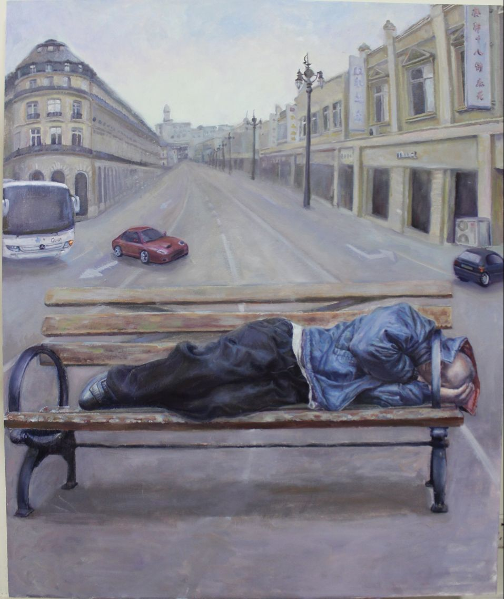

Creativity Drawing
Person & Creativity Drawing
Creativity Drawing
Creativity Drawing
创作油画:
因为从20世纪艺术转到后现代艺术以后有一种理论说， 人人都是艺术家，任何东西都可以成为艺术.在创作中，生活中的美往往是具有很强的 吸引力的，每个画家对生活都会有一定的偏爱，形成这种偏爱是有多种原因的。 除了客观条件提供的可能性外，画家的情感和各种修养形成的感受能力也是重要因素.关于创作油画作品.....
关于油画创作作品.....


- 